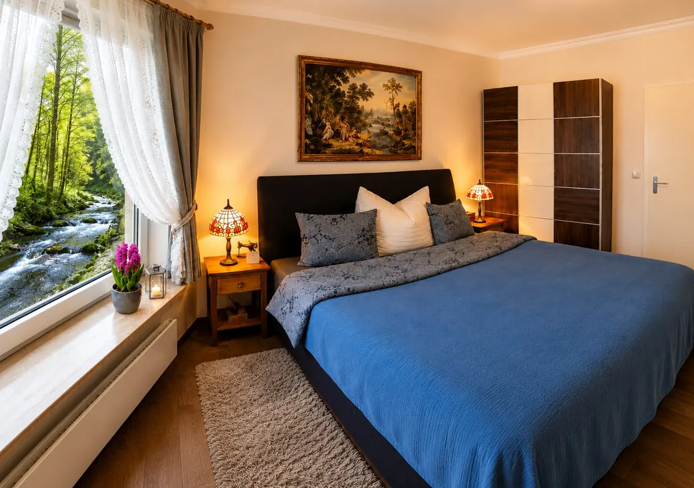
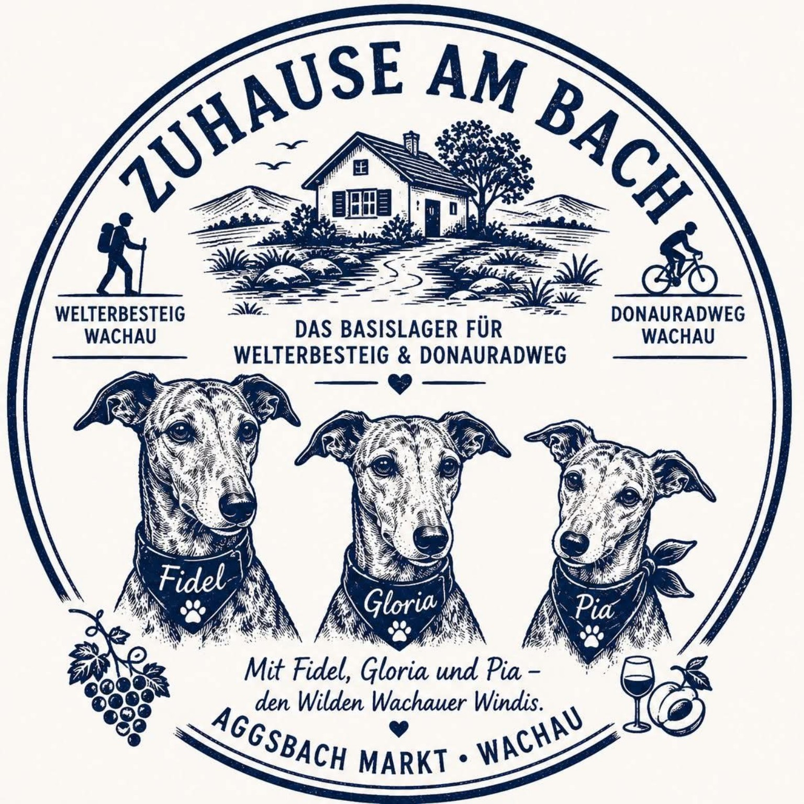
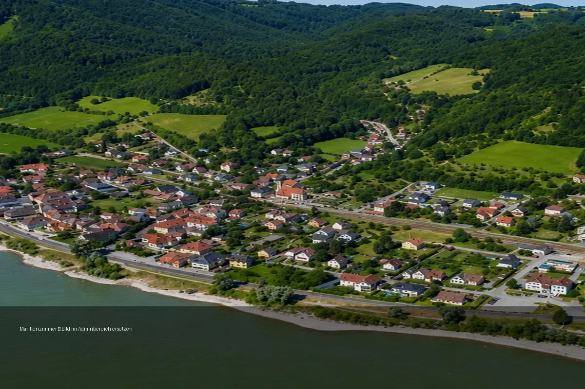
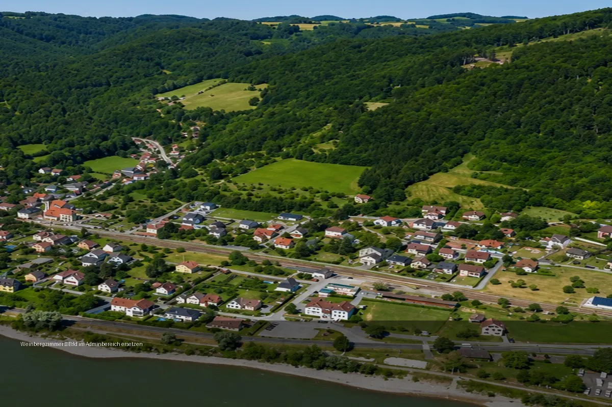
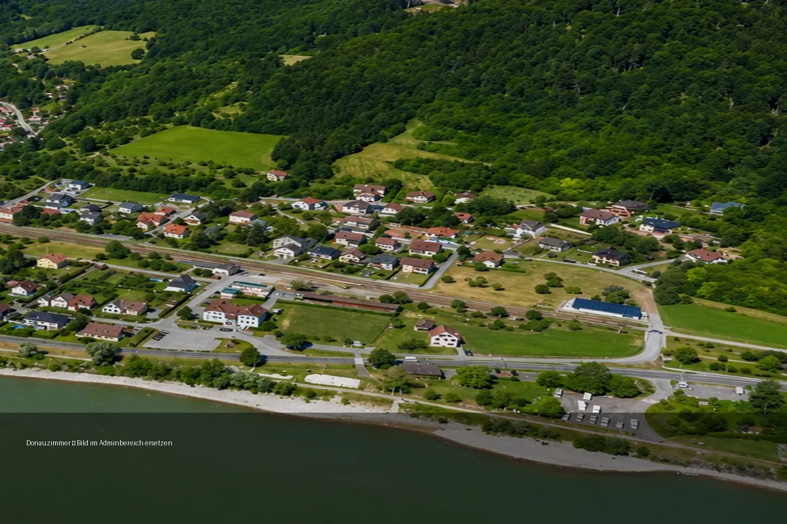
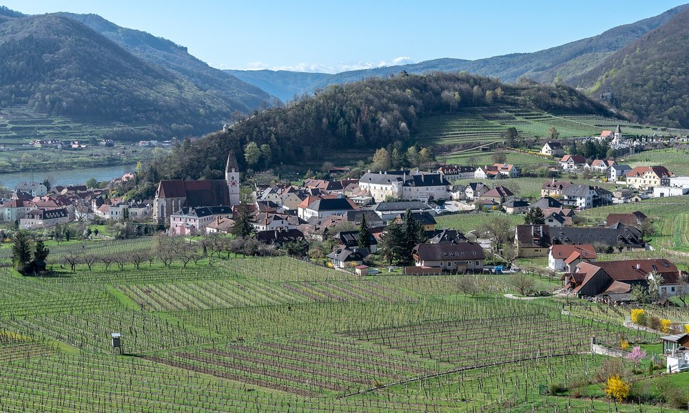
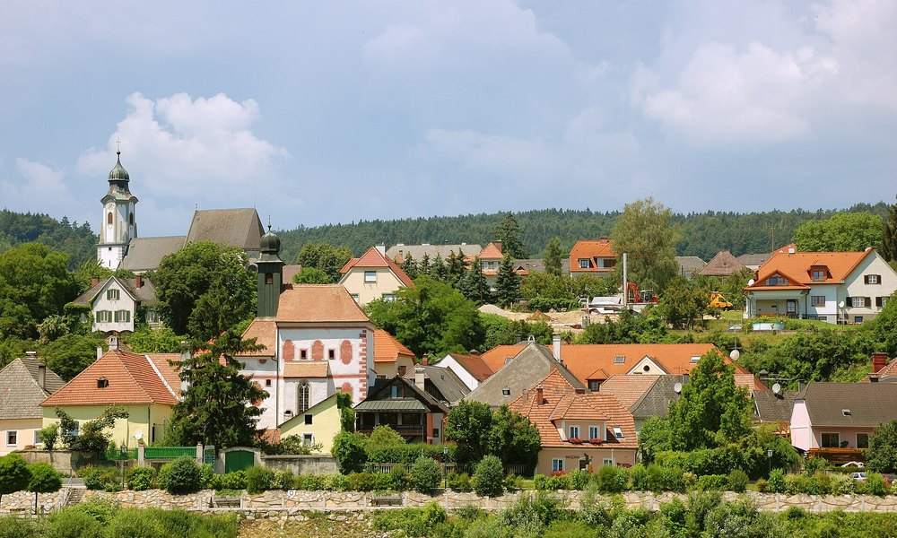
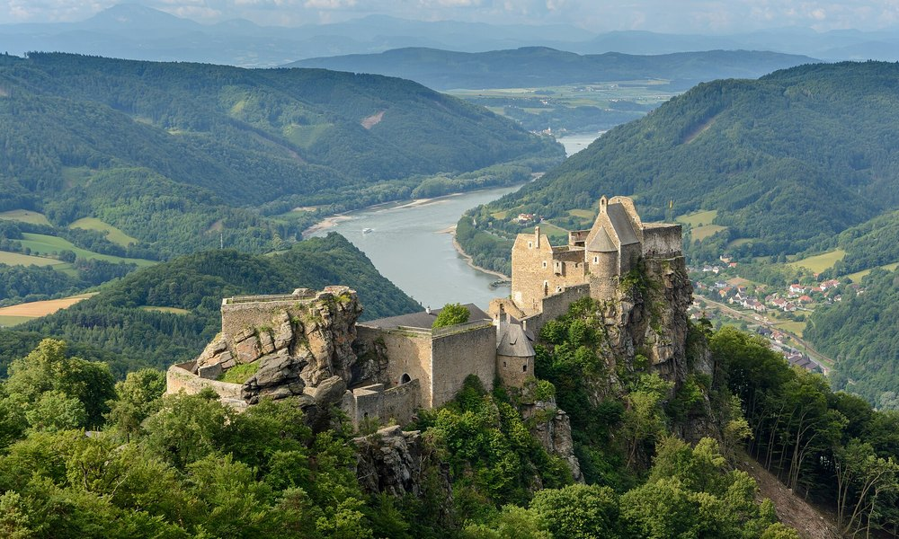
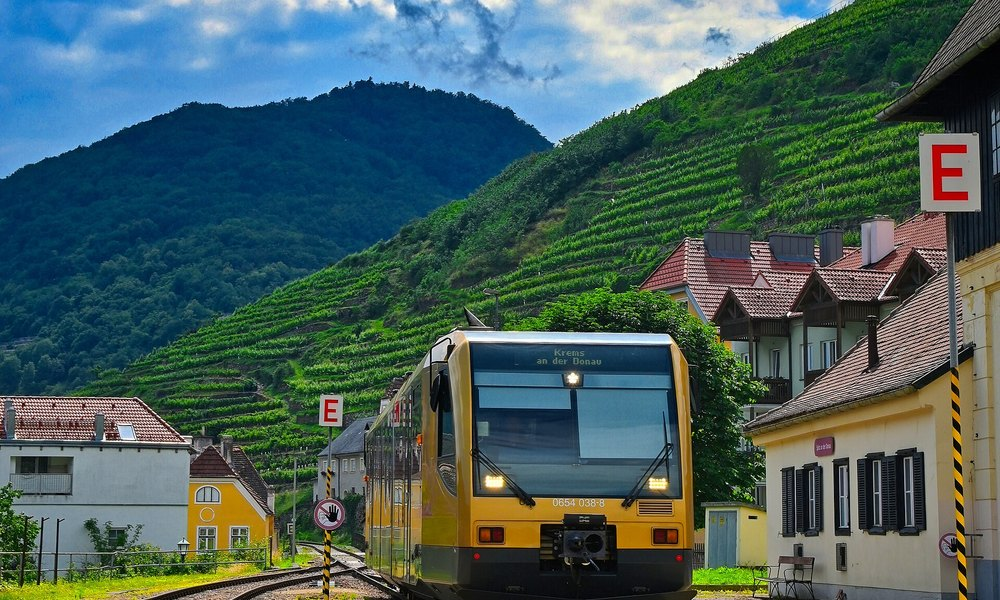
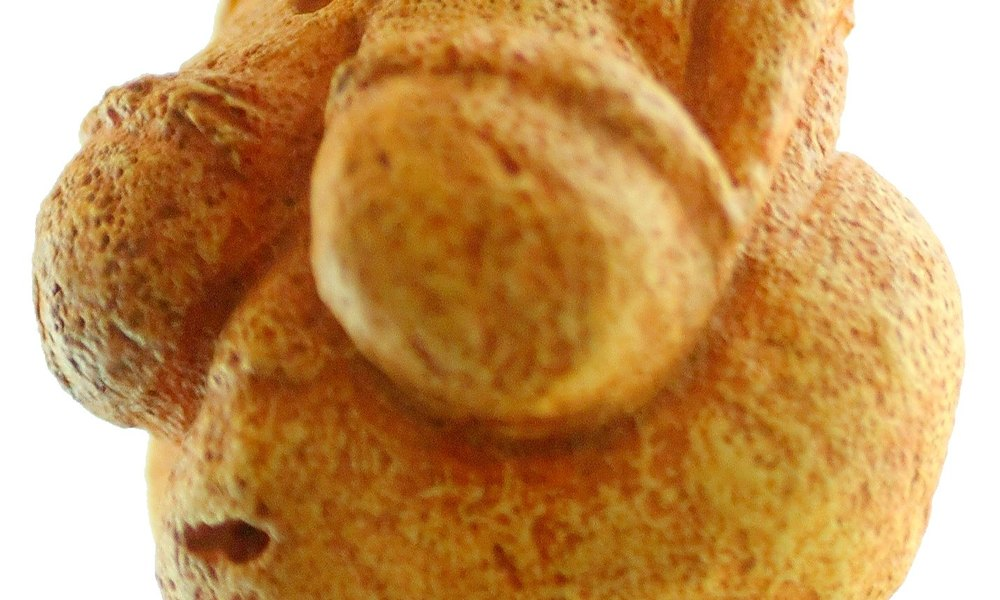

Bachblick
Doppelzimmer mit Blick auf den Bach. Gemütlich, ruhig und zum Wohlfühlen.
ab 101 EUR pro NachtPersönlich übernachten in Aggsbach Markt – für Wanderer am Welterbesteig, Radfahrer am Donauradweg und alle, die die Wachau abseits des Trubels mit Frühstück und persönlichen Tipps entdecken möchten.
🚴 Fahrrad sicher · ⚡ E-Bike laden
🥾 Gepäckservice · 🍳 Frühstück
Wer bei uns übernachtet, erhält auf Wunsch den exklusiven Wachau-Etappenstempel von „Zuhause am Bach“ – für Welterbesteig, Donauradweg und das persönliche Reisetagebuch.
Reisedaten wählen, persönlich anfragen und bei der Ankunft Ihren Wachau-Etappenstempel für Wanderpass oder Radreise-Tagebuch erhalten.
Live-Wetter für Aggsbach Markt wird aktualisiert.
Ob zu Fuß am Welterbesteig oder mit dem Rad entlang der Donau: Jede Etappe wird zu einer Geschichte, die Sie später noch erzählen werden.
Nur vor Ort bei einer Übernachtung erhältlich – nicht online und nicht als Versandartikel.
Transparenz: Dies ist ein eigener Erinnerungsstempel von „Zuhause am Bach“ und kein offizieller Kontroll- oder Leistungsstempel des Welterbesteigs oder Donauradwegs.

Ein Stempel für Wanderer und Radfahrer Exklusiv für Hausgäste von „Zuhause am Bach“ in Aggsbach Markt.Unterkunft, Ort oder Adresse eingeben. Wir berechnen Ihren Gepäckpreis aus der tatsächlichen Fahrstrecke und aktuellen Betriebskosten.
Wählen Sie Ihr Wunschzimmer. Verfügbarkeit und Preis werden vor der Bestätigung geprüft.

Doppelzimmer mit Blick auf den Bach. Gemütlich, ruhig und zum Wohlfühlen.
ab 101 EUR pro Nacht
Wachauer Atmosphäre, warme Details und ein ruhiger Rückzugsort.
derzeit noch nicht buchbar
Inspiriert von den Weinbergen der Wachau, ideal für Genießer.
derzeit noch nicht buchbar
Ein freundliches Zimmer mit Bezug zur Donau und zur Wachauer Landschaft.
derzeit noch nicht buchbar
Donauschlössl / GritschSpitz an der Donau
Steckerlfisch GrafEmmersdorf
Burgruine AggsteinWandern & Aussicht
Wachaubahn „Schnaufi“Nostalgie pur
Venus von WillendorfOriginal in WillendorfDie Gästeapp ist der Begleiter für den Aufenthalt bei Zuhause am Bach: Hausinfo, WLAN-Hilfe, Wetter, Notfallnummern, Wandern, Radfahren, Genuss, Kinderwelt und Gästebuch an einem Ort.
 Direkt am Smartphone öffnen
Direkt am Smartphone öffnen
Hausgäste können ihre Wanderung, Radtour oder einen besonderen Wachau-Moment freiwillig in der digitalen Windi-Chronik festhalten. Ausgewählte Geschichten können – nur nach Zustimmung – in eine jährliche Chronik aufgenommen werden.
Zuhause am Bach ist eine kleine persönliche Unterkunft in Aggsbach Markt in Niederösterreich – mit Frühstück, sicherer Fahrradunterbringung, E-Bike-Lademöglichkeit, Gäste-App und persönlichen Wachau-Tipps.
Ja, Hausgästen steht eine sichere Fahrradunterbringung zur Verfügung.
Ja. Bitte das eigene Ladegerät mitbringen.
Kleine Hilfsmittel und persönliche Unterstützung können vor Ort angefragt werden.
Die Unterkunft ist auf Donauradweg-Gäste in Aggsbach Markt ausgerichtet. Die konkrete Zufahrt bitte über den Routenplaner prüfen.
Das hängt vom Reisedatum und der verfügbaren Mindestaufenthaltsregel ab.
Frühstück kann in der Direktanfrage gewählt werden.
Ab 14:00 Uhr; spätere Anreise bitte abstimmen.
Die Gäste-App enthält lokale Hinweise. Öffnungszeiten bitte aktuell prüfen.
Ja, persönliche Hinweise und digitale Routeninformationen stehen bereit.
Die Unterkunft in Aggsbach Markt richtet sich besonders an Welterbesteig-Gäste.
Je nach Kondition und Wetter kommen Wege Richtung Willendorf, Maria Laach und Spitz infrage. Die konkrete Route bitte aktuell planen.
Ja, als wählbare Zusatzleistung.
Bitte den konkreten Bedarf vor der Buchung abstimmen; eine pauschale Trockenraum-Zusage wird nicht gemacht.
Ja, auf Anfrage als Zusatzleistung.
Lokale Hinweise finden Sie in der Gäste-App; Öffnungszeiten bitte prüfen.
Ab 14:00 Uhr, Check-out bis 10:00 Uhr.
Das hängt von Ihrer Tour ab. Gastgeber und Gäste-App helfen bei der Orientierung.
Ja, persönliche Wachau-Tipps und offizielle Routenlinks sind vorhanden.
Reisedaten, Zimmer und Extras auswählen, den berechneten Gesamtpreis prüfen und die Verfügbarkeit direkt bei Zuhause am Bach anfragen.
Ruhig in Aggsbach Markt übernachten, Frühstück und Gepäcktransport anfragen und die nächste Welterbesteig-Etappe persönlich vorbereiten.
Fahrrad sicher unterbringen, E-Bike laden, Frühstück und Gepäcktransport anfragen und gut vorbereitet zur nächsten Wachau-Etappe starten.